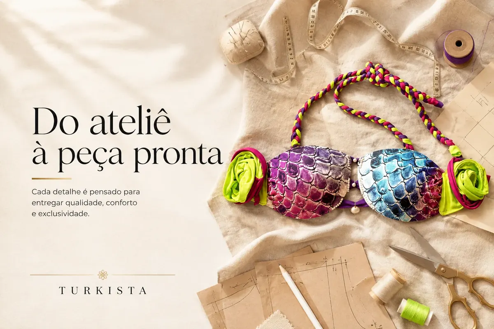
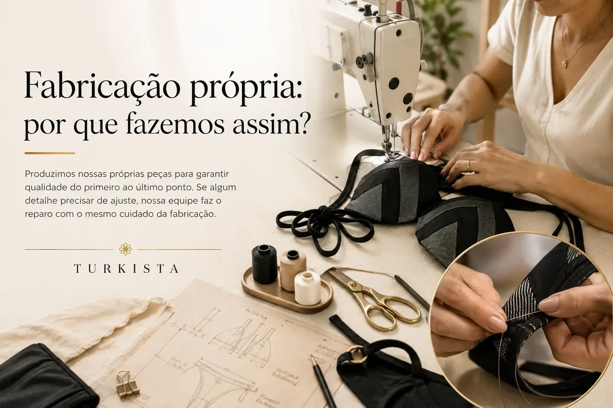

Do ateliê à peça pronta: o cuidado em cada detalhe
Conheça cada etapa da nossa produção própria e o que nos torna únicas.

Antes de ser uma marca, a Turkista foi um ateliê de costura em família, em Araruama. Danielle cresceu vendo a mãe costurar e ajudando, junto com o irmão, a cortar linhas nos arremates — e é esse mesmo ateliê que hoje dá origem a cada peça Turkista.
Cada peça passa pelas mãos de Danielle do início ao fim: a escolha do tecido, o corte, a costura e o acabamento final. Não existe terceirização em nenhuma dessas etapas — o controle é total, o que permite ajustar detalhes finos que uma produção em grande escala não deixaria de olhar.
É esse processo artesanal, feito em pequenas quantidades, que garante que cada corte seja exclusivo. Quando o tecido de um lote acaba, a peça não volta — e é justamente isso que torna cada compra na Turkista parte de um estoque limitado de verdade, não apenas um discurso de marketing.
Fabricação própria não é discurso — é o corte, a costura e o acabamento acontecendo no mesmo ateliê onde tudo começou.
Quer conhecer mais dessa história? A página Sobre a Marca conta a jornada completa, da infância no ateliê até o showroom digital de hoje.
Ficou com dúvida ou quer ver essa peça de perto?
Fala com a gente pelo WhatsApp — respondemos rapidinho e ajudamos a encontrar a peça certa.
Falar no WhatsAppOutros artigos da Revista Turkista

Fabricação própria: por que fazemos assim
Corte, costura e acabamento sob o mesmo teto — e o que isso muda na peça.
Ler artigo
Como cuidar do seu biquíni e fazer durar muito mais
Dicas práticas para conservar a cor, a elasticidade e o caimento das peças.
Ler artigo
O tecido certo faz toda a diferença
Entenda por que escolhemos cada tecido para um tipo de movimento.
Ler artigo